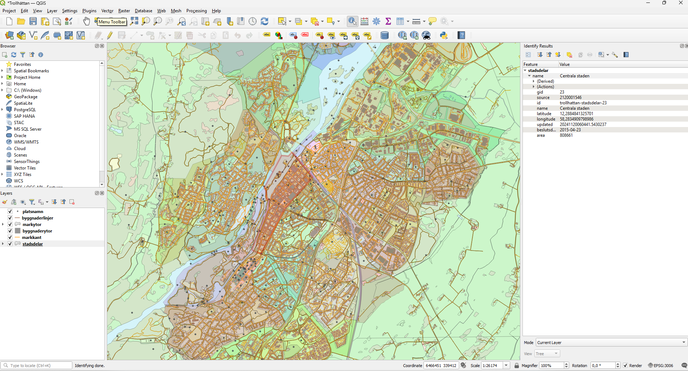
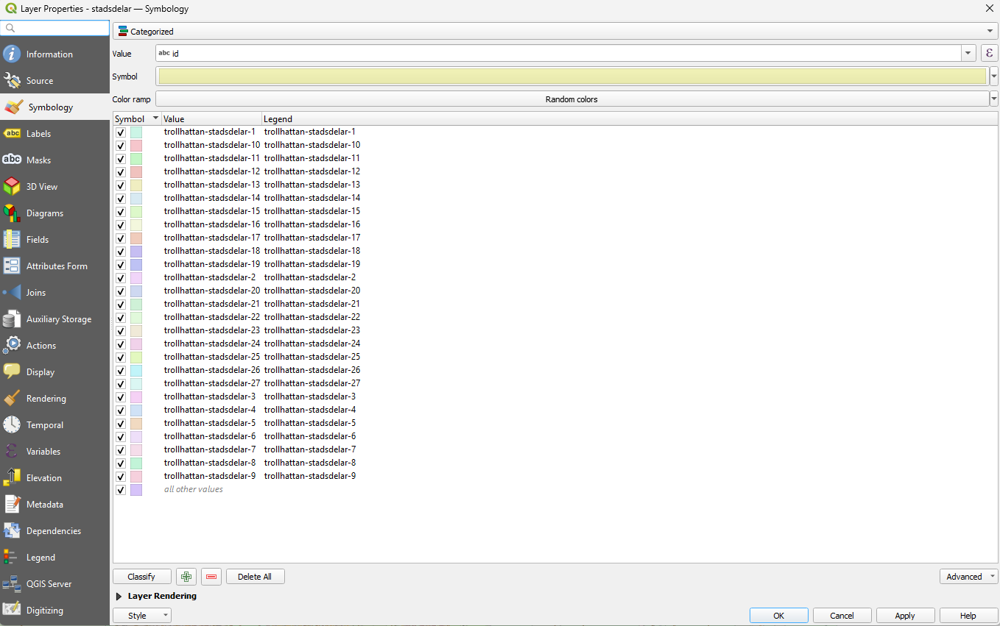
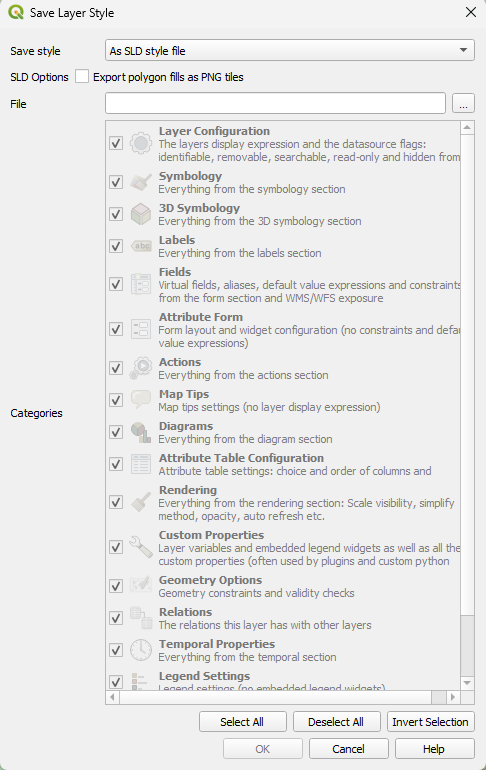

I detta steg används QGIS för att styla, inspektera och kvalitetskontrollera de öppna geografiska data från Trollhättan innan de förs vidare till PostGIS och GeoServer. QGIS fungerar som det visuella verktyget i arbetsflödet.
Jag använder QGIS för att:
QGIS – Översikt:

QGIS – Färgklassificering / kategori-stil:

QGIS – Export till SLD-fil:

Alla dessa stilar exporteras sedan som SLD och laddas upp i GeoServer.